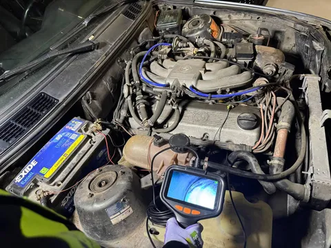

Давайте рассуждать логически. Сегодня понедельник. Понедельник идет после выходных. Выходные - время для семьи. Половина семьи у меня сейчас увлечена попытками разобраться в автомобилестроении. (Это мы с сыном, а жена с кошкой пока не очень вовлекаются.) А значит, сегодня рубрика #лёха_строит_бэху.
За прошедшую неделю сделано немногое, но и мы не спешим. Во-первых, удалось поставить машину на учет. Для этого пришлось дважды съездить в Люберцы. Люберцы и так - дыра, да еще и пробки, к тому же машина не вполне исправна - вообще так себе приключение.
Зато за эти (суммарно) 8 часов за рулем нашего кадавра появились новые пункты списка дел по техничке. Например, починить тормоза, потому что педаль проваливается. И починить стартер, потому что заводится авто в среднем с третьей попытки. И это не так бесило бы, если бы она хотя бы не так часто глохла на ходу. Так что еще надо поднастроить джетроник на горячую. А еще первая передача нормально втыкается только с месте, иначе угрожающе хрустит.
Во-вторых, мы поменяли свечи. Больше в тренировочных целях, но и, как будто, пропусков зажигания стало меньше. Это было увлекательно. В начале (а начали мы спереди) все было легко и забавно, свечки менялись играючи. Снять со свечи высоковольтный провод, подсунуть торцевую свечную головку с удлинителем, насадить трещотку, открутить, достать трещотку и головку, вынуть свечу, заложить новую, наживить, снова засунуть головку, трещотку, закрутить, надеть провод - все шло подозрительно легко. Даже 3-4 цилиндры, где мешает расширительный бачок, дались почти вслепую. Но с каждым цилиндром саспенс только наростал, пока не достиг кульминации - шестого цилиндра.
И вот мы подобрались к нему. Я сразу его побаивался, так как понимал, что этот босс по зубам не каждому. Как водится, задний цилиндр в продольных рядных шестерках - хуже монстра под кроватью. Добраться до его свечи - это из области занимательной проктологии. В тесном пространстве между блоком, моторным щитом и аккумулятором, по локоть в трубках и проводах, ты вслепую пытаешься кончиками пальцев нащупать, куда совать ключ, и при этом было бы здорово не выронить свечу. Это будет пострашнее Фауста Гёте. Но было бы глупо поменять только 5 свечек, так что - как обычно - глаза боятся, а руки в масле. Совместными усилиями мы сдюжили. Тонкие детские руки весьма неплохо предназначены для извлечения свечей из колодцев, всем рекоммендую.
Почему я его изначально боялся? Да потому что уже проходил этот уровень. И в прошлый раз он попил немало моей крови. Почти 10 лет назад у меня уже была бэха - e90 на n52b25, и там я тоже менял свечи. С другом, во дворе, под пенное. В тот раз у нас ушло больше 4 часов и предприятие не увенчалось полным успехом (стемнело, да и пенное дало о себе знать). В n52, к тому же, для доступа к 5-6 цилиндрам нужно было разобрать кучу всего, включая жабо. Но тот опыт меня многому научил, и в этот раз я на опыте действовал уверенее, работали на спокойняках.
В-третьих, мы решили не упускать момент удобного доступа в камеры сгорания и залезли туда эндоскопом. Просто потому что это прикольно. Кто не знает, эндоскоп - это маленькая камера с лампочками на длинном жестком проводе, которую можно засунуть в труднодоступные места и посмотреть, что там творится. Институт травматологии напоминает: эндоскоп - это промышленное оборудование, и он не предназначен для исследования естественных полостей организмов человека и домашних животных. Осмотр показал, что цилиндры в полном порядке - стенки без задиров, хон естественный, нагара минимум, грязь-пыль-стекло-бычки отсутствуют. Приятно.
Эти приключения нас весьма утомили, так что на этом мы, истерзанные шестым цилиндром, закончили упражнение. To be continued.
